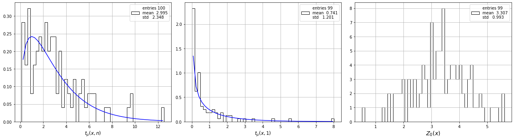
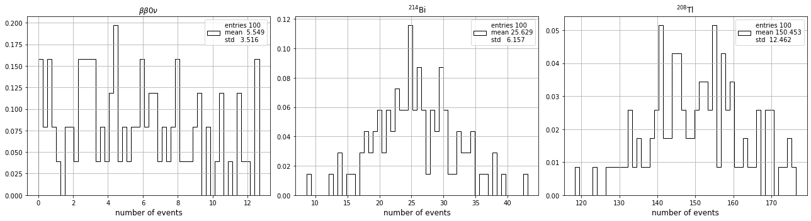
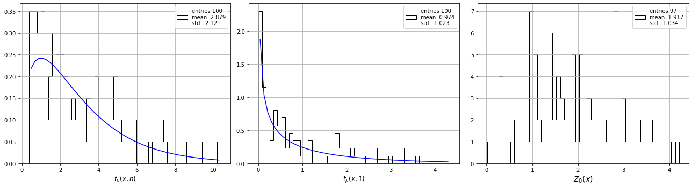
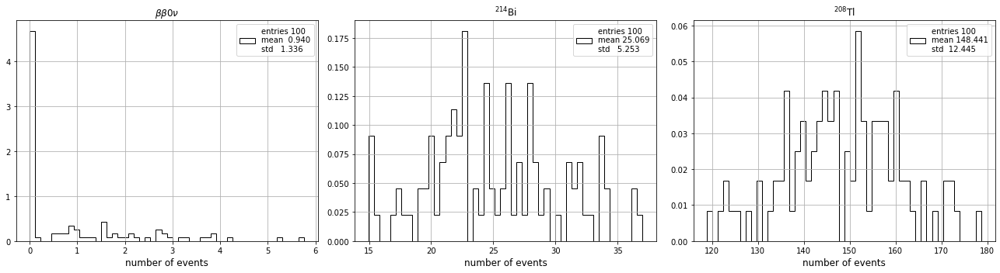
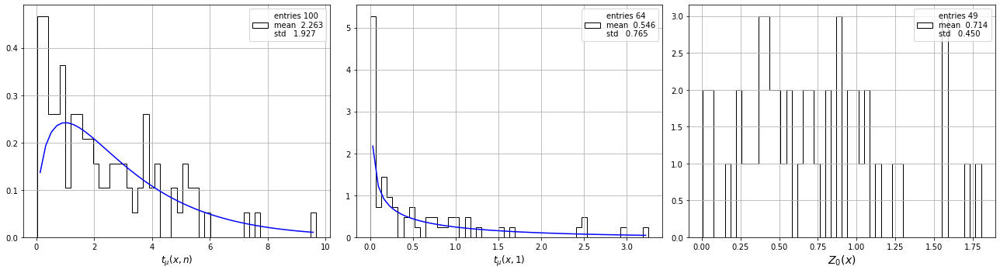
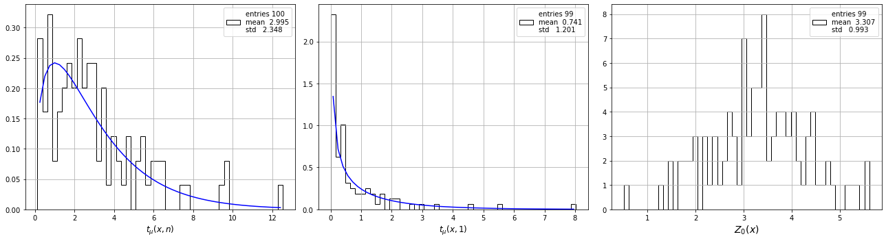
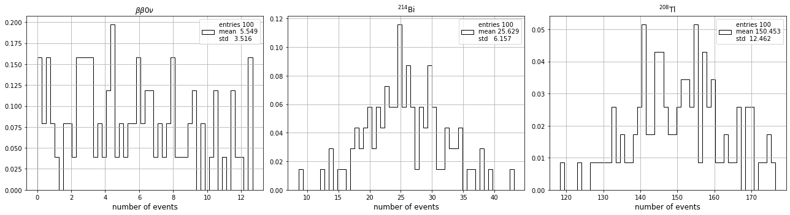
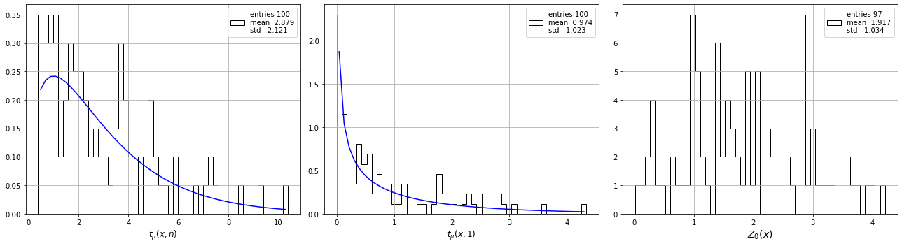
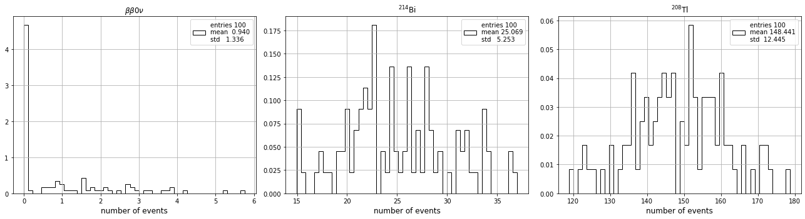
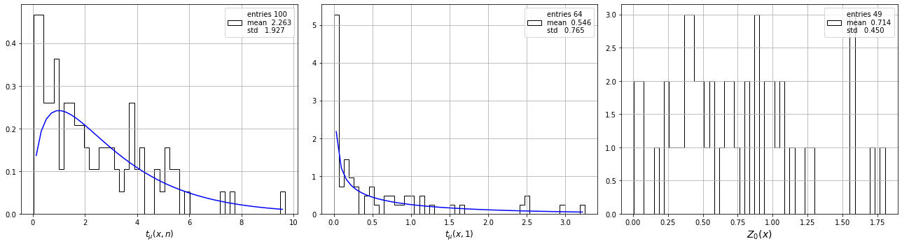

Fanal, a neutrino-less beta decay experiment
Contents
Fanal, a neutrino-less beta decay experiment#
An open exercise#
Sentitivity of the experiment#
Fit to the signal region#
USC, Master de Física, Física de Partícula II#
J. A. Hernando-Morata
February 2021 - February 2022
%matplotlib inline
%load_ext autoreload
%autoreload 2
Importing modules#
import numpy as np
import tables as tb
import pandas as pd
import matplotlib.pyplot as plt
import scipy.constants as constants
import scipy.stats as stats
import scipy.optimize as optimize
import warnings
warnings.filterwarnings('ignore')
# REMEMBER TO ADD THE FOLDER TO PYTHONPATH
import os
import sys
dirpath = os.getcwd()[:-9]
print('add path to PYTHONPATH : ', dirpath)
sys.path.insert(0, os.path.abspath(dirpath))
add path to PYTHONPATH : /Users/hernando/work/docencia/master/Fisica_Particulas/USC-Fanal-v2
import core.pltext as pltext # extensions for plotting histograms
import core.hfit as hfit # extension to fit histograms
import core.efit as efit # Fit Utilites - Includes Extend Likelihood Fit with composite PDFs
import core.confint as confint # Confidence Level functions
import core.utils as ut # generic utilities
import ana.fanal as fn # analysis functions specific to fanal
import ana.pltfanal as pltfn # analysis plotting function specific to fanal
import collpars as collpars # collaboration specific parameters
pltext.style()
Indications#
Objective:#
Estudy the sensitivity of the experiment using a frequentist approach, generating many simulated experiments.
Use the Fit to the signal region.
Tasks#
Open the data file (HDF) and access the simulated data (MC) of 214Bi, 208Tl and bb0nu.
Generate experiments with a given number of signal events and a level of background compatible with the one estimated using the blind-data sample (in previous task).
Ensure that the estimation of your signal is correct in different signal scenarios.
Consider for example the case where the signal events are equal to Bi.
Estimate the uncertainties on the number of signal events.
Study if your experiment will obtain parameters in the gaussian domain
Study the 90% FC CL intervals and the p-value of the \(H_0\) hypothesis.
Notes#
To valide a fit, usually we generate a large number of experiments with known true parameters; estimate the parameters, and study their distributions.
In the case of gaussian domain, these distributions are gaussian, centered in the true value of the parameters and their standard deviations are the uncertentities of the parameters.
In the gaussian domain we expect the FC variable \(t_\mu(x)\) follows a \(\chi^2(1)\) distribution.
Main parameters#
coll = collpars.collaboration
ntracks_range = collpars.ntracks_range
eblob2_range = collpars.eblob2_range
erange = collpars.erange
eroi = collpars.eroi
print('Collaboration : {:s}'.format(coll))
print('number of tracks range : ({:d}, {:6.2f})'.format(*ntracks_range))
print('Blob-2 energy range : ({:6.3f}, {:6.3f}) MeV'.format(*eblob2_range))
print('Energy range : ({:6.3f}, {:6.3f}) MeV'.format(*erange))
print('Energy RoI range : ({:6.3f}, {:6.3f}) MeV'.format(*eroi))
Collaboration : new_alpha
number of tracks range : (1, 1.10)
Blob-2 energy range : ( 0.400, 1.200) MeV
Energy range : ( 2.400, 2.700) MeV
Energy RoI range : ( 2.430, 2.480) MeV
# list of the analisys selection variables names and ranges
varnames = ['num_tracks', 'blob2_E', 'E']
varranges = [ntracks_range, eblob2_range, erange]
print('analysis varnames : ', varnames)
print('analysis varranges : ', varranges)
# list of the reference selction variable names and rages to get pdfs for the MC
refnames = ['num_tracks', 'E']
refranges = [ntracks_range, erange]
print('reference varnames : ', refnames)
print('reference varranges : ', refranges)
analysis varnames : ['num_tracks', 'blob2_E', 'E']
analysis varranges : [(1, 1.1), (0.4, 1.2), (2.4, 2.7)]
reference varnames : ['num_tracks', 'E']
reference varranges : [(1, 1.1), (2.4, 2.7)]
# number of blind events
nevts_Bi = collpars.nevts_Bi
nevts_Tl = collpars.nevts_Tl
print('Number of bkg events in full data : Bi = {:6.2f}, Tl = {:6.2f}.'.format(nevts_Bi, nevts_Tl))
---------------------------------------------------------------------------
AttributeError Traceback (most recent call last)
/var/folders/56/_pmdccc97ljb_l3v3s6gkrxm0000gn/T/ipykernel_83270/2480497440.py in <module>
1 # number of blind events
----> 2 nevts_Bi = collpars.nevts_Bi
3 nevts_Tl = collpars.nevts_Tl
4 print('Number of bkg events in full data : Bi = {:6.2f}, Tl = {:6.2f}.'.format(nevts_Bi, nevts_Tl))
AttributeError: module 'collpars' has no attribute 'nevts_Bi'
Access the data#
#dirpath = '/Users/hernando/work/docencia/master/Fisica_Particulas/USC-Fanal/data/'
filename = '/data/fanal_' + coll + '.h5'
print('Data path and filename : ', dirpath + filename)
mcbi = pd.read_hdf(dirpath + filename, key = 'mc/bi214')
mctl = pd.read_hdf(dirpath + filename, key = 'mc/tl208')
mcbb = pd.read_hdf(dirpath + filename, key = 'mc/bb0nu')
mcs = [mcbb, mcbi, mctl]
tsamples = ['bb', 'Bi', 'Tl']
ssamples = [r'$\beta\beta0\nu$',r'$^{214}$Bi', r'$^{208}$Tl']
Data path and filename : /Users/hernando/work/docencia/master/Fisica_Particulas/USC-Fanal/data/fanal_new_beta.h5
Check method with a mc experiment#
Generate a MC experiments with number of events compatible with estimated number of bkg events and a hipothetical number of signal events.
Fit the energy distribution of the selected events to the thress samples pdfs: bb, Bi. Tl
Do a profile scan to estimate the confidence interval and p0-value for this example
Exercise:
Generate other experiments with different number of signal events to study the performance of the fit
def nevts_total(factor = 1.):
""" Compute the number of total events
Assumes that the number of signal in RoI is a factor of number of Bi en RoI.
"""
nevts_Bi_RoI = collpars.nevts_Bi_RoI
eff_bb_RoI = collpars.eff_bb_RoI
nevts = (factor * nevts_Bi_RoI / eff_bb_RoI, nevts_Bi, nevts_Tl)
return np.array(nevts)
Generate experiments#
Generate m experiments with the same number of expected events.
Study if the estimated number of events for each sample follows a gaussian distribution
Test the the \(t_\mu\) variable for the signal is \(\chi^2(1)\) distributed.
Compute the mean p0-value for the null hypothesis
nevts = nevts_total(1.)
experiment = fn.prepare_experiment_ell(mcs, nevts, varnames, varranges, refnames, refranges)
success, mcdata, eres = experiment()
print('experiment success ? ', success)
print('experimetn result = ', eres)
experiment success ? True
experimetn result = ExpResult(nbb=22.999271243323285, nBi=39.29791414015982, nTl=149.70083610312585, nbb0=21.75092609805476, nBi0=25.25160329988037, nTl0=150.84615243482804, tmun=4.58062762441341, tmu=0.03819053330357747, qmu=0, q0=25.409523637900293)
Attention: generating experiment can be slow…
df = fn.run(experiment, size = 400)
df
| nbb | nBi | nTl | nbb0 | nBi0 | nTl0 | tmun | tmu | qmu | q0 | |
|---|---|---|---|---|---|---|---|---|---|---|
| 0 | 21.895942 | 23.051644 | 158.053144 | 21.750926 | 25.251603 | 150.846152 | 0.408699 | 0.000660 | 0.000000 | 34.735133 |
| 1 | 27.475331 | 25.535110 | 147.987919 | 21.750926 | 25.251603 | 150.846152 | 1.059821 | 0.862018 | 0.000000 | 39.622913 |
| 2 | 26.510647 | 33.596778 | 137.886969 | 21.750926 | 25.251603 | 150.846152 | 3.779950 | 0.630683 | 0.000000 | 41.510231 |
| 3 | 26.373969 | 21.539464 | 144.086225 | 21.750926 | 25.251603 | 150.846152 | 1.062029 | 0.617725 | 0.000000 | 45.774968 |
| 4 | 24.922391 | 16.439151 | 145.638681 | 21.750926 | 25.251603 | 150.846152 | 2.248501 | 0.301910 | 0.000000 | 44.618348 |
| ... | ... | ... | ... | ... | ... | ... | ... | ... | ... | ... |
| 394 | 20.814874 | 39.898342 | 148.289430 | 21.750926 | 25.251603 | 150.846152 | 4.457583 | 0.024999 | 0.024999 | 27.865687 |
| 395 | 15.505420 | 23.076586 | 157.416550 | 21.750926 | 25.251603 | 150.846152 | 2.029868 | 1.362529 | 1.362529 | 20.743026 |
| 396 | 23.277728 | 10.575452 | 159.151062 | 21.750926 | 25.251603 | 150.846152 | 6.170181 | 0.072707 | 0.000000 | 40.686814 |
| 397 | 24.588709 | 29.847816 | 146.565100 | 21.750926 | 25.251603 | 150.846152 | 1.076331 | 0.222892 | 0.000000 | 36.834025 |
| 398 | 24.454760 | 18.590034 | 148.954717 | 21.750926 | 25.251603 | 150.846152 | 1.107494 | 0.211555 | 0.000000 | 39.454748 |
399 rows × 10 columns
pltfn.plot_nevts((df.nbb, df.nBi, df.nTl))
pltfn.plot_gaus_domain(df.tmun, df.tmu, df.q0)
Run several experiments with different number of signal events#
def tau(nbb, taumax = 3e27):
acc_bb = collpars.acc_bb
eff = collpars.eff_bb_RoI
exposure = collpars.exposure
tau = fn.half_life(nbb, exposure, acc_bb * eff)
tau[tau > taumax] = taumax
return tau
size = 100
dfs = []
for factor in (1.25, 1., 0.5, 0.25, 0.):
nevts = nevts_total(factor)
print(' generating {:4.2f}, {:6.2f}, {:6.2f} events, {:d} experiments'.format(*nevts, size))
experiment = fn.prepare_experiment_ell(mcs, nevts, varnames, varranges, refnames, refranges)
df = fn.run(experiment, size)
dfs.append(df)
generating 52.39, 1403.27, 20673.20 events, 100 experiments
generating 41.91, 1403.27, 20673.20 events, 100 experiments
generating 20.95, 1403.27, 20673.20 events, 100 experiments
generating 10.48, 1403.27, 20673.20 events, 100 experiments
generating 0.00, 1403.27, 20673.20 events, 100 experiments
for df in dfs:
df['tau'] = tau(df.nbb)
df['tau0'] = tau(df.nbb0)
for df in dfs:
pltfn.plot_nevts((df.nbb, df.nBi, df.nTl))
pltfn.plot_gaus_domain(df.tmun, df.tmu, df.q0)
 









Feldman Cousins CL#
pltfn.plot_exps_fc_confint(dfs)
Null Hypothesis Z sigmas#
pltfn.plot_exps_z0(dfs)
Appendix: step by step#
varname = 'E'
def experiments(nevts, size = 1):
# expected number of events for each mc sample
effs = np.array([ut.selection_efficiency(mc, varnames, varranges)[0] for mc in mcs])
nevts_exp = effs * nevts
# generate the ELL instace to fit the energy distribution to the energy distribution of the three mc samples
ell = fn.get_ell(mcs, refnames, refranges)
res = []
for i in range(int(size)):
# generate an experiment using the mc samples and a given number of events of each sample
mcdata = fn.generate_mc_experiment(mcs, nevts)
mcdata_ana = ut.selection_sample(mcdata, varnames, varranges)
values = mcdata_ana[varname].values
# fit the energy values of the data
result = ell.best_estimate(values, *nevts_exp)
if (result.success == False): continue
nevts_est = result.x
tmuvals = fn.tmu_values(values, nevts_est, ell, nevts_exp)
res.append(fn.ExpResult(*nevts_est, *nevts_exp, *tmuvals))
res = ut.list_transpose(res)
df = ut.list_to_df(res, fn.ExpResult._fields)
return df
nevts = nevts_total(1.)
df = experiments(nevts, 100)
df
| nbb | nBi | nTl | nbb0 | nBi0 | nTl0 | tmun | tmu | qmu | q0 | |
|---|---|---|---|---|---|---|---|---|---|---|
| 0 | 20.253643 | 18.493586 | 141.253522 | 21.750926 | 25.251603 | 150.846152 | 2.277741 | 0.070436 | 0.070436 | 29.300944 |
| 1 | 15.310376 | 26.725863 | 153.965402 | 21.750926 | 25.251603 | 150.846152 | 1.417845 | 1.351514 | 1.351514 | 19.760244 |
| 2 | 6.620615 | 31.025474 | 169.356157 | 21.750926 | 25.251603 | 150.846152 | 10.665181 | 8.602926 | 8.602926 | 4.990642 |
| 3 | 31.906931 | 28.375538 | 168.723565 | 21.750926 | 25.251603 | 150.846152 | 5.938033 | 2.481820 | 0.000000 | 50.641632 |
| 4 | 14.810485 | 28.091159 | 171.101845 | 21.750926 | 25.251603 | 150.846152 | 4.272933 | 1.727969 | 1.727969 | 21.470198 |
| ... | ... | ... | ... | ... | ... | ... | ... | ... | ... | ... |
| 95 | 30.805808 | 16.044818 | 144.147359 | 21.750926 | 25.251603 | 150.846152 | 3.196125 | 2.096664 | 0.000000 | 51.446584 |
| 96 | 17.030141 | 29.302598 | 144.663438 | 21.750926 | 25.251603 | 150.846152 | 1.080834 | 0.714272 | 0.714272 | 22.291824 |
| 97 | 27.874960 | 16.929223 | 138.194605 | 21.750926 | 25.251603 | 150.846152 | 3.243100 | 1.027773 | 0.000000 | 47.505471 |
| 98 | 32.796538 | 33.375294 | 136.828649 | 21.750926 | 25.251603 | 150.846152 | 7.223877 | 3.173207 | 0.000000 | 57.910239 |
| 99 | 25.254039 | 17.615790 | 135.131099 | 21.750926 | 25.251603 | 150.846152 | 3.347694 | 0.363796 | 0.000000 | 43.815760 |
100 rows × 10 columns